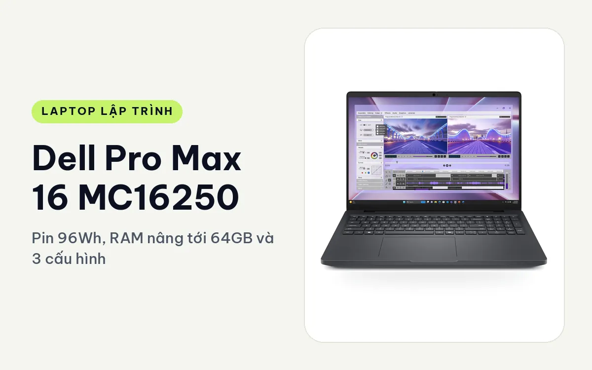
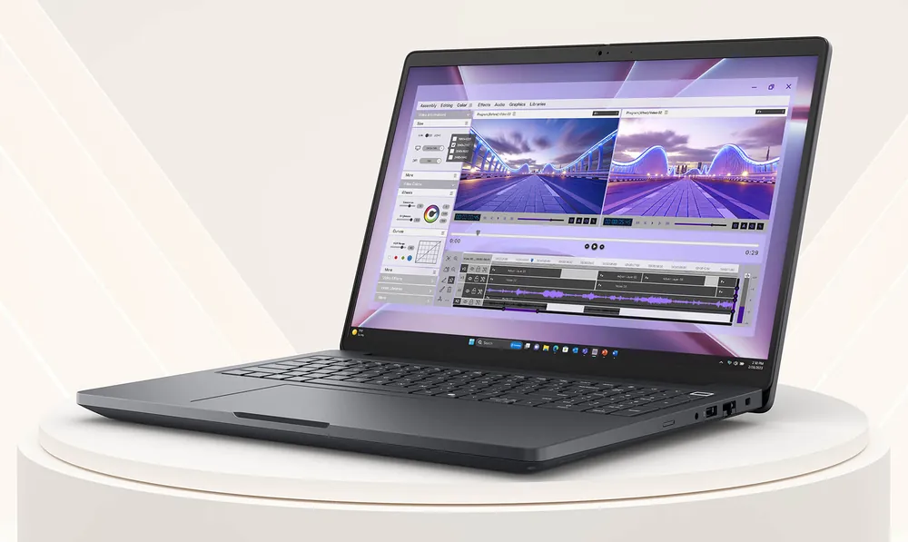
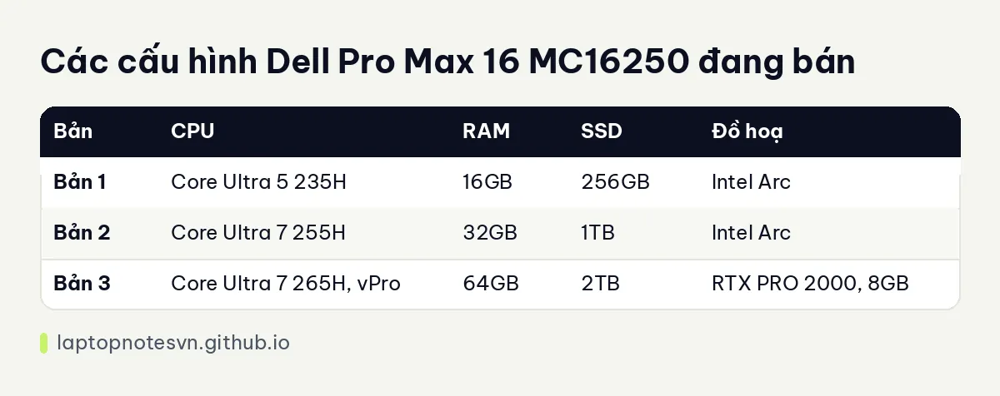

Dell Pro Max 16 MC16250 cho lập trình - Pin 96Wh, RAM nâng tới 64GB và 3 cấu hình

Dell Pro Max 16 MC16250 là máy trạm di động 16 inch của Dell, nhánh MC của dòng Pro Max. Máy có ba cấu hình trải từ bản Intel Arc cho việc nhẹ đến bản RTX PRO 2000 8GB cho dữ liệu và đồ hoạ nặng. Điểm đặc trưng là pin 96Wh lớn và RAM DDR5 nâng được tới 64GB.
Máy hợp người ngồi một chỗ là chính, thỉnh thoảng mang đi, cần màn hình lớn, nhiều RAM và card chuyên nghiệp, ví dụ dev backend nặng, data, AI cỡ vừa hoặc kỹ sư làm dựng hình.
Thiết kế, to và có chỗ cho tản nhiệt
Khung máy rộng 358mm, sâu 256mm, dày từ 15,08mm đến 25,60mm. Đây là kích thước máy 16 inch thực thụ, không có ý nhỏ gọn. Bù lại là hệ thống tản nhiệt rộng cho chip H và card RTX PRO chạy tải dài.

Cổng kết nối gồm 2 Thunderbolt 4, HDMI 2.1, RJ45 Gigabit và 2 cổng USB 3.2. Có USB-A, có mạng dây, cắm chuột bàn phím không cần hub. RAM DDR5 là loại thay được, nâng tối đa 64GB, nghĩa là bản 16GB ban đầu vẫn có đường lên.
Cả ba bản dùng màn FHD+ 1920 x 1200 60Hz, phủ 45% NTSC, sáng 300 nits (bản 3 là 400 nits), nên chưa hợp việc cần chuẩn màu. Nếu công việc của bạn cần màn chuẩn màu, hãy hỏi cửa hàng về tấm nền của đúng bản đang bán trước khi quyết.
Mang đi hằng ngày
Máy nặng 2,2kg, thêm củ sạc nữa thì balo khá nặng. Pin 96Wh cho thời lượng khoảng 6 đến 9 giờ khi dùng nhẹ. Khi chạy tải nặng như build lớn hay chạy mô hình, con số rơi xuống khoảng 4 đến 5 giờ.

Nói cách khác, mang đến văn phòng hoặc quán cà phê vẫn làm việc được vài giờ, còn đi công tác thường xuyên thì máy hơi to. Cân nặng của bản Dell Pro Max 16 Premium gần như tương đương, nên chọn nhánh nào là do màn hình và card, không phải do độ nhẹ.
Có 3 cấu hình
Ba bản tạo thành ba nấc rõ ràng, từ nhẹ đến nặng, và mỗi nấc ứng với một nhóm công việc khác.

| Bản | CPU | RAM | SSD | Đồ hoạ |
|---|---|---|---|---|
| Bản 1 | Core Ultra 5 235H | 16GB | 256GB | Intel Arc |
| Bản 2 | Core Ultra 7 255H | 32GB | 1TB | Intel Arc |
| Bản 3 | Core Ultra 7 265H, vPro | 64GB | 2TB | RTX PRO 2000, 8GB |
Bản 1, Core Ultra 5 235H / 16GB / 256GB, Arc
Bản thấp nhất. Phù hợp học code, web front-end, script và backend nhỏ. Tuy nhiên ổ 256GB khá hạn chế cho máy 16 inch to như vậy, nên bạn nên cắm thêm ổ ngoài hoặc nâng SSD ngay từ đầu. Nếu ngân sách cho phép, bản 2 thường là lựa chọn đáng hơn.
Bản 2, Core Ultra 7 255H / 32GB / 1TB, Arc
Bản cân bằng nhất cho dân lập trình. Chip H cùng 32GB RAM đủ chạy Docker Compose nhiều dịch vụ, máy ảo, Android Studio kèm emulator và cơ sở dữ liệu cục bộ. SSD 1TB cũng thoáng cho nhiều dự án. Do chỉ có đồ hoạ Arc tích hợp, bản này không có CUDA, nên nếu dự án AI của bạn cần CUDA thì phải chạy trên cloud hoặc chọn bản 3.
Bản 3, Core Ultra 7 265H vPro / 64GB / 2TB, RTX PRO 2000
Đây là bản mạnh nhất trong ba bản. RTX PRO 2000 với 8GB VRAM chạy được CUDA, tinh chỉnh mô hình nhỏ, dựng 3D, xử lý video và các phần mềm kỹ thuật cần driver chứng nhận. 64GB RAM cho phép chạy máy ảo song song với dataset lớn, còn SSD 2TB đủ chỗ cho dữ liệu huấn luyện và nhiều image Docker.
Giới hạn thật vẫn là 8GB VRAM, nên mô hình ngôn ngữ lớn sẽ không chạy trọn. Chi tiết về mức RAM nên chọn xem ở bài lập trình viên cần bao nhiêu RAM.
Về tổng thể, ba bản dùng chung một khung máy, một pin và một bộ cổng. Khác biệt nằm ở chip, RAM, ổ và card, nên bạn có thể quyết nhanh theo tải công việc thay vì phải so cả thiết kế.
Nên chọn bản nào
Làm web, mobile, backend phổ thông thì chọn bản 2, đây là bản mua một lần dùng lâu. Học code hoặc dự án nhỏ, ngân sách hẹp thì bản 1, và tính tới nâng SSD sớm. Cần CUDA, dữ liệu nhiều, máy ảo nặng hoặc đồ hoạ chuyên nghiệp thì bản 3.
Điểm khác với bản 14 inch: máy 16 inch này cho phép card RTX PRO 2000 và pin lớn, trong khi bản 14 inch dừng ở RTX PRO 500. Ai chỉ cần máy gọn hơn, hãy xem Dell Pro Max 14 MC14250. Còn nếu bạn muốn màn OLED, Thunderbolt 5 và card tới RTX PRO 3000, hãy đọc bài Pro Max 16 Premium ở liên kết phía trên.
Đăng ngày 08/11/2026